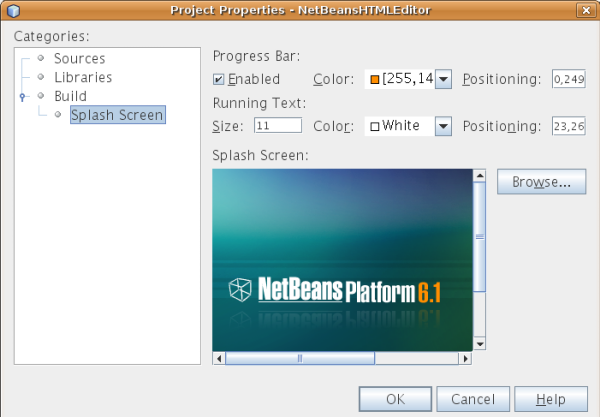
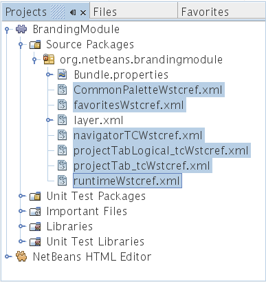
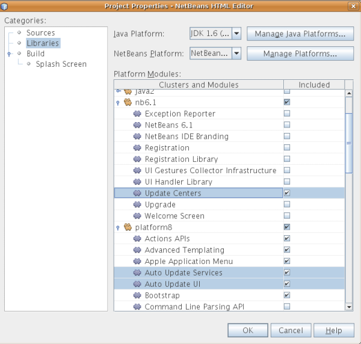

Apache NetBeans
Apache NetBeansLatest release
Руководство по началу работы с платформой NetBeans
| This tutorial needs a review. You can open a JIRA issue, or edit it in GitHub following these contribution guidelines. |
Добро пожаловать в среду NetBeans!
В этом документе представлена процедура быстрого знакомства с работой в среде NetBeans на примере создания простого редактора HTML. Несмотря на свою простоту, создаваемый редактор HTML будет очень функциональным, поскольку в нем будет использована инфраструктура, предоставляемая платформой NetBeans. Например, этот редактор HTML будет иметь развитую оконную систему, для создания которой не потребуется написание какого-либо кода. После изучения этого руководства читатель получит общее представление о создании, сборке и выполнении приложений на базе платформы NetBeans.
После изучения этого руководства можно перейти к другой учебной карте по платформе NetBeans. Учебная карта содержит подробные руководства, в которых рассматривается широкий спектр интерфейсов API среды NetBeans для разнообразных приложений. Если процедура создания простейшего приложения "Hello World" читателю уже знакома, можно пропустить этот документ и перейти сразу к учебной карте.
Дополнительно, в целях поиска и устранения ошибок, можно загрузить готовые примеры и изучить исходный код.
По завершении изучения этого руководства будет создан редактор HTML, который выглядит следующим образом:

| Это очень простое демонстрационное приложение, но вовсе не игрушка! Это настоящая программа, поддерживающая простое редактирование страниц HTML, с такими возможностями, как автозавершение кода, проверка допустимости и предварительно определенные фрагменты HTML. |
Создаваемый в этом руководстве редактор HTML является функционально насыщенным клиентским приложением на базе платформы NetBeans. Это означает, что основой этого приложения будет ядро среды IDE, которым и является платформа NetBeans. Поверх платформы NetBeans добавляются необходимые модули и исключаются те, которые нужны для среды IDE, но не требуются для данного приложения. Здесь показаны некоторые из модулей среды IDE, добавленных к платформе NetBeans, которые являются ее основой:

Создание этого редактора HTML подразумевает создание скелета приложения, исключение ненужных модулей и элементов интерфейса пользователя, а затем настройку окна "Favorites", которое должно открываться по умолчанию при запуске среды IDE. Все эти действия поддерживаются элементами интерфейса пользователя в среде IDE.
Пользователь сможет лично убедиться в том, как легко и просто сформировать или, точнее, собрать полнофункциональное приложение на платформе NetBeans. В конце этого документа показано, как с помощью ускоренной установки по сети сделать конечный продукт легко загружаемым и запускаемым.
| Несмотря на то, что это приложение является отдельной программой, для целей этого руководства не требуется загружать платформу NetBeans отдельно. Функционально насыщенное клиентское приложение будет разработано в среде IDE, и затем из него будут исключены модули, необходимые для IDE, но не требуемые этим приложением. |
Создание скелета приложения
При создании приложения на базе платформы NetBeans самым первым действием должно стать создание проекта приложения на платформе NetBeans. По умолчанию проект приложения платформы NetBeans имеет в своем составе все модули в составе платформы NetBeans, а также все модули, входящие в среду IDE NetBeans. Поскольку некоторые из этих модулей нам не требуются, их следует исключить.
-
С помощью мастера создания проекта (Ctrl-Shift-N) создайте проект приложения на платформе NetBeans из шаблона в категории "NetBeans Modules", как показано ниже:

Нажмите кнопку "Next" и присвойте проекту приложения на платформе NetBeans имя "NetBeansHTMLEditor". Нажмите кнопку "Finish".
-
Щелкните правой кнопкой мыши узел проекта, выберите "Properties" и затем внесите некоторые изменения в диалоговом окне "Project Properties" приложения.
-
На экране "Build" выберите "Create Standalone Application", чтобы указать, что это будет функционально насыщенное клиентское приложение на платформе NetBeans.
-
Убедитесь, что используется подходящее название исполняемого файла, и определите текст, который будет выводиться в строке заголовка приложения, как показано ниже:

-
На экране "Splash Screen" обратите внимание на то, что можно установить заставку приложения и индикатор хода выполнения, как показано ниже:

| При отсутствии собственной заставки используйте эту. |
-
На экране "Libraries" диалогового окна "Project Properties" имеется список кластеров. Кластер представляет собой ряд связанных модулей. Следует выбрать только кластеры
gsf1,ide9иplatform8. Отмените выбор всех других кластеров. Теперь необходимо подключить и отключить ряд модулей, так как выбраны должны быть только те модули, которые относятся непосредственно к нашему редактору HTML. Каждый раз при выборе или отмене выбора модуля на экране "Libraries" в файл настройки платформы NetBeans данного приложения добавляется запись. Для ускорения этого процесса мы просто вставим записи в данный файл. Закройте диалоговое окно "Project Properties".
Разверните узел "Important Files" и затем откройте файл настройки платформы NetBeans. Вставьте следующие записи:
disabled.clusters=\
apisupport1,\
harness,\
java2,\
nb6.1,\
profiler3
disabled.modules=\
org.mozilla.rhino.patched,\
org.netbeans.api.debugger,\
org.netbeans.api.visual,\
org.netbeans.core.ide,\
org.netbeans.core.multiview,\
org.netbeans.core.nativeaccess,\
org.netbeans.insane,\
org.netbeans.lib.cvsclient,\
org.netbeans.libs.commons_logging,\
org.netbeans.libs.ini4j,\
org.netbeans.libs.jna,\
org.netbeans.libs.svnClientAdapter,\
org.netbeans.libs.xerces,\
org.netbeans.modules.autoupdate.services,\
org.netbeans.modules.autoupdate.ui,\
org.netbeans.modules.classfile,\
org.netbeans.modules.core.kit,\
org.netbeans.modules.css.editor,\
org.netbeans.modules.css.visual,\
org.netbeans.modules.db,\
org.netbeans.modules.db.core,\
org.netbeans.modules.db.drivers,\
org.netbeans.modules.db.kit,\
org.netbeans.modules.db.mysql,\
org.netbeans.modules.db.sql.editor,\
org.netbeans.modules.db.sql.visualeditor,\
org.netbeans.modules.dbapi,\
org.netbeans.modules.editor.bookmarks,\
org.netbeans.modules.editor.kit,\
org.netbeans.modules.extbrowser,\
org.netbeans.modules.gototest,\
org.netbeans.modules.httpserver,\
org.netbeans.modules.ide.kit,\
org.netbeans.modules.javascript.editing,\
org.netbeans.modules.javascript.hints,\
org.netbeans.modules.javascript.kit,\
org.netbeans.modules.javascript.refactoring,\
org.netbeans.modules.languages,\
org.netbeans.modules.languages.bat,\
org.netbeans.modules.languages.diff,\
org.netbeans.modules.languages.manifest,\
org.netbeans.modules.languages.sh,\
org.netbeans.modules.localhistory,\
org.netbeans.modules.mercurial,\
org.netbeans.modules.project.ant,\
org.netbeans.modules.project.libraries,\
org.netbeans.modules.properties,\
org.netbeans.modules.properties.syntax,\
org.netbeans.modules.schema2beans,\
org.netbeans.modules.sendopts,\
org.netbeans.modules.server,\
org.netbeans.modules.servletapi,\
org.netbeans.modules.subversion,\
org.netbeans.modules.tasklist.kit,\
org.netbeans.modules.tasklist.projectint,\
org.netbeans.modules.tasklist.todo,\
org.netbeans.modules.tasklist.ui,\
org.netbeans.modules.timers,\
org.netbeans.modules.usersguide,\
org.netbeans.modules.utilities,\
org.netbeans.modules.utilities.project,\
org.netbeans.modules.versioning,\
org.netbeans.modules.versioning.system.cvss,\
org.netbeans.modules.versioning.util,\
org.netbeans.modules.web.flyingsaucer,\
org.netbeans.modules.xml,\
org.netbeans.modules.xml.axi,\
org.netbeans.modules.xml.core,\
org.netbeans.modules.xml.lexer,\
org.netbeans.modules.xml.multiview,\
org.netbeans.modules.xml.retriever,\
org.netbeans.modules.xml.schema.completion,\
org.netbeans.modules.xml.schema.model,\
org.netbeans.modules.xml.tax,\
org.netbeans.modules.xml.text,\
org.netbeans.modules.xml.tools,\
org.netbeans.modules.xml.wsdl.model,\
org.netbeans.modules.xml.xam,\
org.netbeans.modules.xml.xdm,\
org.netbeans.modules.xsl,\
org.netbeans.spi.debugger.ui,\
org.netbeans.spi.viewmodel,\
org.netbeans.swing.dirchooser,\
org.openide.compat,\
org.openide.util.enumerations
enabled.clusters=\
gsf1,\
ide9,\
platform8
nbplatform.active=defaultТеперь имеется подмножество модулей NetBeans, которые соответствуют нашему редактору HTML. Однако несмотря на то, что все оставшиеся модули действительно необходимы, скорее всего нам не потребуются связанные с ними элементы интерфейса пользователя. В следующих разделах мы настроим интерфейс пользователя и размещение элементов окна специально для создаваемого редактора HTML.
Настройка интерфейса пользователя
В интерфейсе пользователя можно оставить столько функций, сколько позволяют выбранные модули. Например, в редакторе HTML возможно, не будут использоваться какие-либо пункты меню "Tools". Также весьма вероятно, что имеются панели инструментов или кнопки на панелях инструментов, без которых можно обойтись. В этом разделе мы будем настраивать интерфейс пользователя среды IDE до тех пор, пока не останемся с набором функций, полностью отвечающим требованиям функционально насыщенного клиентского приложения.
-
Разверните проект приложения на платформе NetBeans, щелкните правой кнопкой мыши узел "Modules" и выберите "Add New", как показано ниже:

Появится мастер создания проекта (Ctrl-Shift-N). Присвойте проекту имя BrandingModule и нажмите кнопку "Next".
-
В поле "Code Name Base" введите
org.netbeans.brandingmodule.
-
В поле "XML Layer" введите имя пакета с окончанием "layer.xml", например, "org/netbeans/brandingmodule/layer.xml", а затем нажмите кнопку "Finish".
| Если не ввести в это поле путь к файлу "layer.xml", файл создан не будет. В этом случае в основном пакете следует создать файл с именем "layer.xml" и затем вручную зарегистрировать его в файле манифеста модуля следующим образом: |
OpenIDE-Module-Layer: org/netbeans/brandingmodule/layer.xml-
В модуле "Branding" разверните узел
layer.xml. Появятся два подузла:

| Если файл layer.xml был добавлен вручную, необходимо развернуть узел "Important Files" и затем развернуть находящийся в нем узел "layer.xml". |
-
В узле
<this layer in context>представлены все папки и файлы, зарегистрированные всеми модулями на своих уровнях. Для исключения отдельных элементов щелкните их правой кнопкой мыши и выберите "Delete", как показано ниже:

Затем среда IDE добавит теги к файлу layer.xml модуля, который после установки модуля скроет удаленные элементы. Например, щелкнув правой кнопкой мыши Menu Bar/Edit , можно удалить ненужные для редактора HTML пункты из меню "Edit". В результате в файле layer.xml будут созданы, например, следующие фрагменты:
<folder name="Menu">
<folder name="Edit">
<file name="org-netbeans-modules-editor-MainMenuAction$StartMacroRecordingAction.instance_hidden"/>
<file name="org-netbeans-modules-editor-MainMenuAction$StopMacroRecordingAction.instance_hidden"/>
</folder>
</folder>Результатом приведенного выше фрагмента является то, что функции Start Macro Recording и Stop Macro Recording , обеспечиваемые другим модулем, будут удалены из меню модулем "Branding". Чтобы снова вывести их на экран, просто удалите вышеперечисленные теги из файла layer.xml .
-
С помощью вышеописанного метода скройте необходимое количество панелей инструментов, кнопок панели инструментов, меню и пунктов меню.
По завершении загляните в файл layer.xml . Общий вид должен соответствовать приведенному ниже, в зависимости от удаленных элементов:
<?xml version="1.0" encoding="UTF-8"? >
<!DOCTYPE filesystem PUBLIC "-//NetBeans//DTD Filesystem 1.1//EN" "https://netbeans.org/dtds/filesystem-1_1.dtd">
<filesystem>
<folder name="Menu">
<file name="BuildProject_hidden"/>
<folder name="File">
<file name="Separator2.instance_hidden"/>
<file name="SeparatorNew.instance_hidden"/>
<file name="SeparatorOpen.instance_hidden"/>
<file name="org-netbeans-modules-project-ui-CloseProject.shadow_hidden"/>
<file name="org-netbeans-modules-project-ui-CustomizeProject.shadow_hidden"/>
<file name="org-netbeans-modules-project-ui-NewFile.shadow_hidden"/>
<file name="org-netbeans-modules-project-ui-NewProject.shadow_hidden"/>
<file name="org-netbeans-modules-project-ui-OpenProject.shadow_hidden"/>
<file name="org-netbeans-modules-project-ui-RecentProjects.shadow_hidden"/>
<file name="org-netbeans-modules-project-ui-SetMainProject.shadow_hidden"/>
<file name="org-netbeans-modules-project-ui-groups-GroupsMenu.shadow_hidden"/>
</folder>
<file name="Refactoring_hidden"/>
<file name="RunProject_hidden"/>
<folder name="Window">
<file name="ViewRuntimeTabAction.shadow_hidden"/>
<file name="org-netbeans-modules-project-ui-logical-tab-action.shadow_hidden"/>
<file name="org-netbeans-modules-project-ui-physical-tab-action.shadow_hidden"/>
</folder>
</folder>
</filesystem>Настройка размещения элементов в окне
С помощью узла <this layer in context> можно не только удалять существующие элементы, но и изменять их содержимое. Например, этот редактор HTML работает с файлами HTML, поэтому в отличие от стандартной среды IDE, которая работает и с исходными файлами, и с проектами Java, здесь в исходной схеме размещения целесообразно отображать окно Favorites .
Схема размещения элементов окна также описывается в виде файлов на уровнях, хранящихся в папке Windows2 . Файлы в папке Windows2 представляют собой "псевдочитаемые" файлы XML, определяемые интерфейсами API для системы окон. Они довольно сложны для понимания, однако для целей нашего редактора HTML не обязательно изучать их полностью (см. ниже).
-
В узле
<this layer in context>модуля "Branding" щелкните узелWindows2правой кнопкой мыши и выберите "Find", как показано ниже:

-
Выполните поиск объекта с именем
Favorites, без учета регистра. Будет найдено два файла:

Первый файл определяет, как будет выглядеть элемент и как он создается. Поскольку эти параметры изменять не нужно, вносить изменения в файл не требуется. Второй файл более интересен для наших целей, так как он содержит следующее:
<tc-ref version="2.0">
<module name="org.netbeans.modules.favorites/1" spec="1.1" />
<tc-id id="favorites" />
<state opened="false" />
</tc-ref>-
Несмотря на то, что большая часть языка XML представляется непонятной, по крайней мере одна строка выглядит многообещающе – даже без чтения какой-либо документации очевидно, что путем замены
falseнаtrueможно сделать этот элемент открывающимся по умолчанию. Попробуйте!
-
Аналогичным образом можно изменить состояние открытия по умолчанию на поведение, которое должно быть реализовано в редакторе HTML, для следующих окон:
-
CommonPalette.wstcref. Состояние открытия окна "Component Palette" –false. Измените его наtrue. -
navigatorTC.wstcref. Состояние открытия окна "Navigator" –true. Измените его наfalse. -
projectTabLogical_tc.wstcref. Состояние открытия окна "Projects" –true. Измените его наfalse. -
projectTab_tc.wstcref. Состояние открытия окна "Files" –true. Измените его наfalse. -
runtime.wstcref. Состояние открытия окна "Services" –true. Измените его наfalse.
-
Теперь модуль "Branding" должен содержать несколько новых файлов, по одному для каждого из измененных файлов. Фактически эти файлы заменяют собой те, что были найдены на предыдущих этапах, и теперь мы владеем необходимой информацией для изменения схемы размещения элементов окна:

Проверьте, что в файле layer.xml теперь имеются нижеприведенные строки. В противном случае скопируйте их и вставьте в файл layer.xml .
<?xml version="1.0" encoding="UTF-8"? >
<!DOCTYPE filesystem PUBLIC "-//NetBeans//DTD Filesystem 1.1//EN" "https://netbeans.org/dtds/filesystem-1_1.dtd">
<filesystem>
<folder name="Menu">
<file name="BuildProject_hidden"/>
<folder name="File">
<file name="Separator2.instance_hidden"/>
<file name="SeparatorNew.instance_hidden"/>
<file name="SeparatorOpen.instance_hidden"/>
<file name="org-netbeans-modules-project-ui-CloseProject.shadow_hidden"/>
<file name="org-netbeans-modules-project-ui-CustomizeProject.shadow_hidden"/>
<file name="org-netbeans-modules-project-ui-NewFile.shadow_hidden"/>
<file name="org-netbeans-modules-project-ui-NewProject.shadow_hidden"/>
<file name="org-netbeans-modules-project-ui-OpenProject.shadow_hidden"/>
<file name="org-netbeans-modules-project-ui-RecentProjects.shadow_hidden"/>
<file name="org-netbeans-modules-project-ui-SetMainProject.shadow_hidden"/>
<file name="org-netbeans-modules-project-ui-groups-GroupsMenu.shadow_hidden"/>
</folder>
<file name="Refactoring_hidden"/>
<file name="RunProject_hidden"/>
<folder name="Window">
<file name="ViewRuntimeTabAction.shadow_hidden"/>
<file name="org-netbeans-modules-project-ui-logical-tab-action.shadow_hidden"/>
<file name="org-netbeans-modules-project-ui-physical-tab-action.shadow_hidden"/>
</folder>
</folder>
<folder name="Windows2">
<folder name="Modes">
<folder name="commonpalette">
<file name="CommonPalette.wstcref" url="CommonPaletteWstcref.xml"/>
</folder>
<folder name="explorer">
<file name="favorites.wstcref" url="favoritesWstcref.xml"/>
<file name="projectTabLogical_tc.wstcref" url="projectTabLogical_tcWstcref.xml"/>
<file name="projectTab_tc.wstcref" url="projectTab_tcWstcref.xml"/>
<file name="runtime.wstcref" url="runtimeWstcref.xml"/>
</folder>
<folder name="navigator">
<file name="navigatorTC.wstcref" url="navigatorTCWstcref.xml"/>
</folder>
</folder>
</folder>
</filesystem>Настройка окна "Favorites"
В подпапках папки branding проекта приложения на платформе NetBeans, отображенных в окне "Files", можно заменить строки, определенные в исходных файлах NetBeans. В этом разделе будут заменены те строки, которые описывают метки, используемые в окне "Favorites". Например, мы изменим текст "Favorites" на "HTML Files", поскольку это окно предназначено именно для файлов HTML.
-
Откройте окно "Files" и разверните папку
brandingпроекта приложения на платформе NetBeans.
-
Создайте новую структуру папок в
branding/modules. Новой папке должно быть присвоено имяorg-netbeans-modules-favorites.jar. Внутри этой папки создайте иерархию папокorg/netbeans/modules/favorites. В последней папке, т.е.favorites, создайте новый файлBundle.properties.

Эта структура папок и файл свойств соответствуют структуре в исходных файлах NetBeans, которая связана с окном "Favorites".
-
Добавьте строки, показанные ниже на рисунке, для замены таких же строк, определенных в соответствующем файле свойств в исходных файлах окна "Favorites":

Для упрощения этой задачи скопируйте вышеуказанные строки и вставьте их:
Favorites=HTML Files
ACT_AddOnFavoritesNode=&Find HTML Files...
ACT_Remove=&Remove from HTML Files List
ACT_View=HTML Files
ACT_Select=HTML Files
ACT_Select_Main_Menu=Select in HTML Files List
# JFileChooser
CTL_DialogTitle=Add to HTML Files List
CTL_ApproveButtonText=Add
ERR_FileDoesNotExist={0} does not exist.
ERR_FileDoesNotExistDlgTitle=Add to HTML Files List
MSG_NodeNotFound=The document node could not be found in the HTML Files List.Выполнение приложения
Выполнить наше приложение совсем не сложно – следует просто щелкнуть узел проекта правой кнопкой мыши и выбрать требуемый пункт меню.
-
Щелкните узел проекта приложения правой кнопкой мыши и выберите "Clean and Build All".
-
Щелкните узел проекта приложения правой кнопкой мыши и выберите "Run".
-
После развертывания приложения можно щелкнуть правой кнопкой мыши в окне "Favorites" и выбрать папку, содержащую файлы HTML, а затем открыть файл HTML, как показано ниже:
Подготовка дистрибутива приложения
Выберите один из двух способов распространения приложения. Если необходимо поддерживать максимально возможный контроль над приложением, то для его распространения следует выбрать способ установки по сети. В этом случае каждый раз, когда требуется обновить приложение, это осуществляется локально, а конечные пользователи извещаются об обновлении, которое они будут получать автоматически при следующем запуске приложения через сеть. В качестве дистрибутива также может использоваться файл ZIP, содержащий данное приложение. Тогда все приложение будет доступно конечным пользователям локально. В этом случае обновления и новые компоненты будут распространяться через механизм обновления, описанный ниже.
Распространение приложения через файл ZIP
Для обеспечения расширяемости приложения следует предусмотреть возможность установки пользователями модулей для расширения функциональных возможностей приложения. Для этого необходимо просто включить несколько дополнительных модулей, которые свяжут диспетчер подключаемых модулей с редактором HTML.
-
Щелкните правой кнопкой мыши проект приложения платформы NetBeans и выберите "Properties". В диалоговом окне "Project Properties" перейдите на экран "Libraries" и установите флажки
Update Centers,Auto Update ServicesиAuto Update UI, выделенные ниже:

-
Щелкните узел проекта приложения правой кнопкой мыши и выберите "Clean and Build All".
-
Снова запустите приложение и обратите внимание на появление в меню "Tools" нового пункта меню под названием "Plugins":

-
Выберите новый пункт меню "Plugins" и установите некоторые подключаемые модули, которые будет удобно использовать в редакторе HTML. Просмотрите материалы на Plugin Portal и найдите несколько подходящих модулей. Конечные пользователи будут обновлять свою локальную установку приложения таким же способом.
1. Щелкните правой кнопкой мыши узел проекта приложения и выберите "Build ZIP Distribution".
-
Теперь в папке
dist(в окне "Files") должен отобразиться файл ZIP, который можно развернуть для просмотра его содержимого:

Средство запуска приложения создается в папке bin , как показано выше.
|
Распространение редактора HTML через общедоступное хранилище для установки NetBeans по сети
Теперь вместо распространения файла ZIP подготовимся к распространению через быструю установку по сети путем точной настройки файла master.jnlp , создаваемого при первом запуске приложения. Даже в том случае, если оно работает, оно еще не готово к распространению. Следует как минимум изменить информационную часть с целью усовершенствования описаний и значков.
Еще одно изменение стандартной инфраструктуры приложения на базе JNLP касается использования общедоступного хранилища JNLP на сайте www.netbeans.org. По умолчанию приложение на базе JNLP, создаваемое для программного пакета, всегда содержит все его модули, а также все модули, от которых оно зависит. Это может быть удобно для использования во внутренней сети, но для широкого распространения в Интернете это менее практично. В случае Интернета намного удобнее, когда все приложения, создаваемые на базе платформы NetBeans, обращаются к одному хранилищу модулей NetBeans, т.к. это подразумевает, что такие модули используются совместно и не должны загружаться несколько раз.
Такое хранилище существует и для среды NetBeans 6.1. Оно содержит не все имеющиеся в среде IDE NetBeans модули, но достаточное их количество для поддержания работы приложений, не входящих в среду IDE, таких как наш редактор HTML. Для использования этого хранилища необходимо только изменить platform.properties путем добавления правильного URL-адреса:
# share the libraries from common repository on netbeans.org
# this URL is for release60 JNLP files:
jnlp.platform.codebase=https://netbeans.org/download/6_0/jnlp/Как только приложение будет запущено как приложение на базе JNLP, все его совместно используемые подключаемые модули будут загружены с netbeans.org и будут использоваться вместе с другими аналогичными приложениями.
Дополнительная информация
Руководство по началу работы с платформой NetBeans завершено. В этом документе была рассмотрена процедура создания подключаемого модуля, добавляющего панель поиска Google к среде IDE. Для получения дополнительных сведений о создании и разработке приложений на платформе NetBeans см. следующие материалы:

{kind=link}